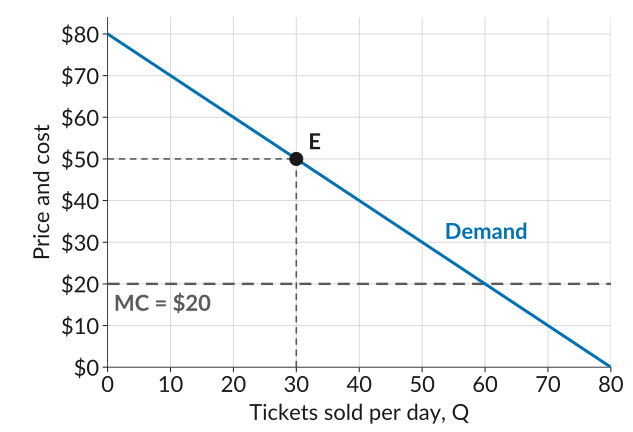

Lecture 11: Practice
Deadweight loss and who captures the surplus
Work through each problem on paper before you open its Solution.
1. Sierra Bikes
Sierra Bikes assembles electric bikes. Its demand curve is \(P = 1{,}200 - 10Q\), where \(Q\) is bikes per day and \(P\) is the price in dollars, and its cost function is \(C(Q) = 2{,}000 + 200Q\). Sierra maximizes its profit by selling 50 bikes a day at $700 each.
(a) How many buyers value a bike at more than its $200 cost? Find the deadweight loss at Sierra’s profit-maximizing point.
Solution
Demand meets marginal cost where \(1{,}200 - 10Q = 200\), at \(Q = 100\) bikes. Each of the first 100 bikes is worth more to its buyer than the $200 it costs to make, but Sierra sells only 50.
The deadweight loss is the triangle between the demand curve and marginal cost from 50 to 100 bikes: \[\text{DWL} = \tfrac{1}{2} \times (100 - 50) \times (700 - 200) = 12{,}500\]
The market could create \(\tfrac{1}{2} \times 100 \times (1{,}200 - 200) = 50{,}000\) of surplus a day, and at 50 bikes it creates \(12{,}500 + 25{,}000 = 37{,}500\).
(b) How much is the 70th buyer willing to pay? Does this buyer buy a bike at $700? Suppose Sierra sold this buyer one extra bike for $350, and kept charging everyone else $700. How much does each side gain? Is this a Pareto improvement?
Solution
The 70th buyer’s willingness to pay is the height of the demand curve at 70 bikes: \(1{,}200 - 10 \times 70 = 500\), less than $700, so this buyer does not buy.
At $350, the buyer gains \(500 - 350 =\) $150, and Sierra gains \(350 - 200 =\) $150 on a bike it would not otherwise have sold. Everyone else still pays $700, so nobody is worse off. It is a Pareto improvement.
2. Escape Hour
Escape Hour is the only escape room in town. The figure shows its demand curve and its marginal cost: each extra player costs $20 in staff time and supplies. Escape Hour maximizes its profit at the point \(E\), selling 30 tickets a day at $50 each.

(a) How much is the 40th player willing to pay? Does this player buy a ticket at $50? Suppose Escape Hour sold this player one ticket for $30, and kept charging everyone else $50. How much does each side gain? Is this a Pareto improvement?
Solution
The 40th player’s willingness to pay is the height of the demand curve at 40 tickets: $40, less than $50, so this player does not buy.
At $30, the player gains \(40 - 30 =\) $10, and Escape Hour gains \(30 - 20 =\) $10 on a ticket it would not otherwise have sold. Everyone else still pays $50, so nobody is worse off. It is a Pareto improvement.
(b) How many players value a ticket at more than its $20 cost? Shade the deadweight loss and find its value.
Solution
The demand curve is above marginal cost up to 60 tickets, but Escape Hour sells only 30. The deadweight loss is the triangle between the demand curve and marginal cost from 30 to 60 tickets: \[\text{DWL} = \tfrac{1}{2} \times (60 - 30) \times (50 - 20) = 450\]
3. Multiple choice
Q1. Select all the statements that are correct.
- If a Pareto improvement is possible, the outcome is not Pareto efficient.
- A Pareto efficient outcome is always fair.
- If one person gets all of a pizza and the others get none, the outcome can still be Pareto efficient.
- Moving $10 from one person to another is a Pareto improvement.
Solution
An outcome is Pareto efficient when no change could make someone better off without making someone else worse off, so if a Pareto improvement exists, the outcome is not efficient. Giving the whole pizza to one person is efficient, because any slice for the others makes that person worse off, but few would call it fair. Moving $10 helps the person who gets it and hurts the one who pays, so it is not a Pareto improvement. (a) and (c) are correct.
Q2. A firm sets one price for all its buyers. Which change is a Pareto improvement?
- The firm sells one extra unit, at a price between its marginal cost and the buyer’s willingness to pay, to a buyer who was not buying, and keeps the price the same for everyone else.
- The firm raises its price by $1 on every unit.
- The firm lowers its price by $1 on every unit.
- The firm stops selling to the buyer with the lowest willingness to pay.
Solution
In (a) the new buyer gains, the firm earns more than the unit costs, and nobody else is affected. Raising the price hurts buyers, lowering it from the profit-maximizing price lowers the firm’s profit, and dropping a buyer makes that buyer worse off. (a) is correct.
Q3. A firm that sets a single price produces less than the quantity where demand meets marginal cost. Why?
- Its marginal cost rises as it produces more.
- Its fixed cost is too high to produce more.
- To sell one more unit, it has to lower the price on every unit it already sells.
- Buyers with a low willingness to pay do not value the good at more than it costs.
Solution
Past the profit-maximizing quantity, the extra revenue from one more unit is less than its cost, because the firm has to cut the price on all its units to sell it. There are still buyers who value the good at more than its marginal cost, which is why there is a deadweight loss. The fixed cost does not affect the choice of quantity. (c) is correct.
Q4. A firm’s demand curve is \(P = 100 - Q\) and its marginal cost is $20 at every quantity. It maximizes profit by selling 40 units at $60. Select all the statements that are correct.
- Consumer surplus is $800.
- Producer surplus is $1,600.
- The deadweight loss is $1,600.
- All gains from trade would be realized at 80 units.
Solution
Consumer surplus is \(\tfrac{1}{2} \times 40 \times (100 - 60) = 800\), and producer surplus is \((60 - 20) \times 40 = 1{,}600\). Demand meets marginal cost where \(100 - Q = 20\), at 80 units, so the deadweight loss is \(\tfrac{1}{2} \times (80 - 40) \times (60 - 20) = 800\), not $1,600. (a), (b), and (d) are correct.
Q5. (Adapted from CORE Question 7.12) Beautiful Cars maximizes its profit by selling 20 cars a day at $30,000 each. Which statement is correct?
- Consumer surplus is the sum, over all buyers, of the difference between each buyer’s willingness to pay and the price.
- Producer surplus equals the firm’s profit.
- Deadweight loss is the loss the firm incurs by not selling more cars.
- All possible gains from trade are achieved when the firm chooses its profit-maximizing output and price.
Solution
Producer surplus is revenue minus marginal costs, so it leaves out the fixed cost: profit is producer surplus minus the fixed cost. Deadweight loss is the loss of potential surplus to buyers and the firm together, not only the firm. At the profit-maximizing point some buyers are willing to pay more than a car costs to make but do not get one, so some gains from trade are missed. (a) is correct.
Q6. Which of these are examples of price discrimination? Select all the statements that are correct.
- A museum charges students less than other visitors for the same ticket.
- A pizza place charges more for a large pizza than a small one.
- A store cuts the price of a jacket for every customer at the end of the season.
- A car dealer bargains with each buyer, so two buyers pay different prices for the same car.
Solution
Price discrimination means charging different buyers different prices for the same good, based on how much they are willing to pay. A student discount and car-lot bargaining both do that. A large pizza is a different product from a small one, and an end-of-season sale gives every customer the same price. (a) and (d) are correct.